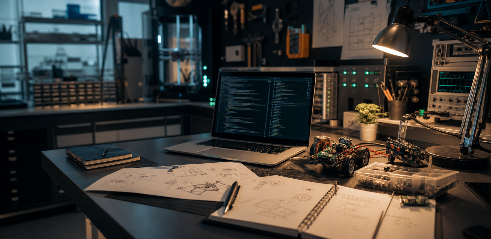

Arjun Prabhakaran · selected progress · 2026
Good systems start with a careful experiment.
A personal engineering lab for low-latency systems, market data experiments, quantum error mitigation, alternative alpha, and automation research.
Selected practice
Proofs of work across performance engineering and applied research.
This is a collection of progress: experiments that start as questions, then become benchmarks, models, handlers, notebooks, and working prototypes.
Selected work
Project index
Loading project index...
Process
Small loops. Clear artifacts. Useful systems.
01
Problem frame
Define the user, system constraint, and the measurable change the project should create.
02
Prototype loop
Build the smallest credible version, instrument it, and keep the learning cycle tight.
03
Operational polish
Document tradeoffs, add observability, and make the system comfortable to maintain.
Next experiment